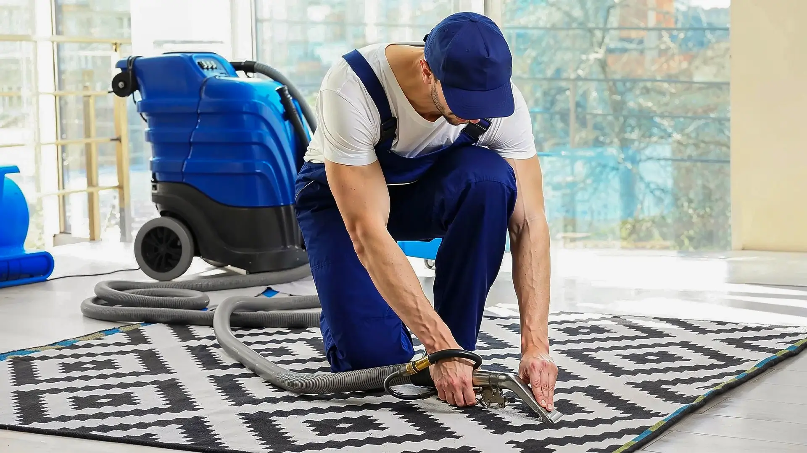

定期進行專業地氈清潔，可大幅延長地毯使用壽命並確保室內衛生
📋 目錄
為什麼地氈清潔與保養如此重要？
地毯是家居及辦公室中最容易被忽視的清潔死角之一。表面看來整潔的地毯，其實可能藏有大量肉眼看不見的污染物。 單靠日常吸塵並不足夠，深層的地氈清潔不僅是為了美觀，更是為了移除深藏在纖維中的過敏原。
我有一位客戶陳小姐，孩子入伙半年後開始出現鼻敏感。我們上門評估後，發現地毯深層積聚了大量塵蟎。 完成一次專業清洗地毯及地毯消毒後，孩子的症狀明顯改善了。這證明了定期深層清潔的重要性。
— 麗雅清潔 Patrick 師師傅日常護理：5個簡單習慣
做好日常護理，可以大大減低深層地氈清潔的次數。以下是我們推薦的 5 個日常習慣：
- 每週至少吸塵兩次：使用配備 HEPA 濾網的吸塵機，吸走表面的塵埃。
- 門口放置入門毯：攔截約 85% 的進門污垢。
- 脫鞋進入地毯區：減少鞋底帶入的細菌與泥沙。
- 定期轉換地毯方向：讓磨損均勻分佈，延長壽命。
- 避免陽光直射：防止地毯褪色及纖維老化。
污漬急救指南
污漬處理的速度是關鍵。一般而言，污漬在 30 分鐘內處理成功率最高。若處理不當，污漬會滲入纖維深處，屆時便需要專業的清洗地毯服務。
| 污漬類型 | 急救方法 | 處理難度 |
|---|---|---|
| 咖啡 / 茶 | 冷水立即沖淡，吸乾 | ⭐⭐ 較易 |
| 紅酒 | 吸乾後灑少許鹽，靜置5分鐘 | ⭐⭐⭐ 中等 |
| 寵物尿液 | 立即大量冷水稀釋，需配合地毯消毒 | ⭐⭐⭐⭐ 較難 |
清洗地毯頻率建議表
不同的使用環境對清洗地毯的需求截然不同。以下建議頻率能助您維持理想的衛生水平：
| 使用環境 | 日常吸塵 | 深層清洗及消毒 |
|---|---|---|
| 單身或二人居所 | 每週 1–2 次 | 每 12–18 個月一次 |
| 有幼童家庭 | 每週 2–3 次 | 每 6–12 個月一次 |
| 有寵物家庭 | 每週 3–4 次 | 每 3–6 個月一次 |
| 辦公室（高流量） | 每日 | 每 3–6 個月一次 |
自行清洗 vs 專業機洗與地毯消毒
很多人會嘗試自行清洗地毯，但家用設備往往只能處理表面污垢。專業的地氈清潔服務結合了工業級吸力與專業的地毯消毒程序，能徹底殺滅細菌。
為什麼需要專業地毯消毒？
地毯纖維是細菌滋生的溫床。麗雅清潔在服務中會加入專業級的地毯消毒劑，能有效殺滅 99.9% 的常見細菌及病毒，這對於有寵物或幼童的家庭尤為重要。
專業機洗能深入纖維根部，配合消毒劑達到真正的深層清潔
何時需要預約專業上門機洗地氈服務？
以下情況建議盡快安排專業上門機洗地氈服務：
- 地毯出現異味，吸塵後仍然存在（需進行地毯消毒）
- 顏色明顯變深或出現大面積污漬
- 家庭成員出現不明原因的敏感症狀
- 地毯超過一年未有進行深層地氈清潔
- 家中有新生嬰兒或寵物，對衛生要求極高
⭐ 客戶真實分享
我家的米色地毯養了兩隻貓，污漬和氣味問題一直困擾我。找了麗雅清潔後，Patrick 師傅進行了深層清洗地毯及地毯消毒。 清洗後地毯重現原有的米白色，之前的異味完全消失，連我家的貓都顯得更愛在地毯上玩耍了！
總結
地毯保養並非難事，關鍵在於建立良好的日常習慣，並在適當時機安排專業的地氈清潔。 透過定期清洗地毯與地毯消毒，您不僅能延長地毯壽命，更能為家人創造一個健康衛生的居住環境。
如您對地毯保養或清洗服務有任何疑問，歡迎透過 WhatsApp 聯絡麗雅清潔公司。我們提供免費上門評估，為您制定最合適的方案。